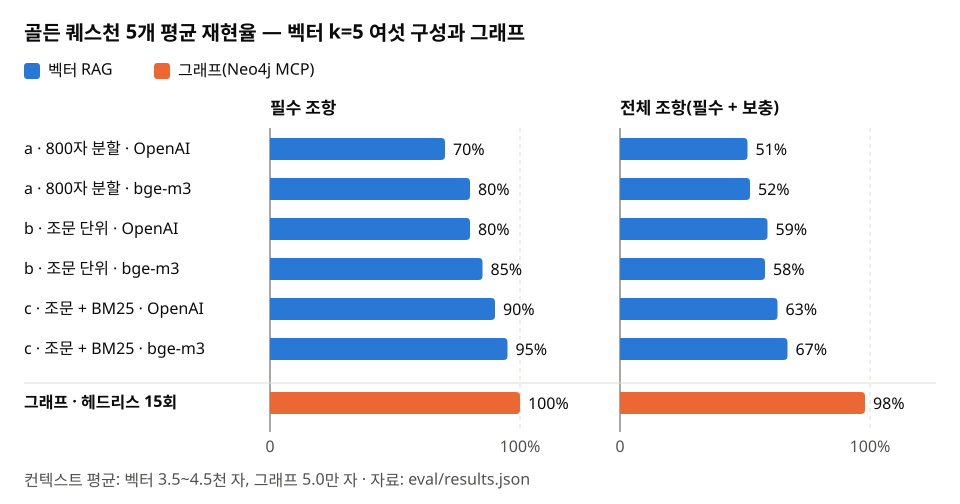
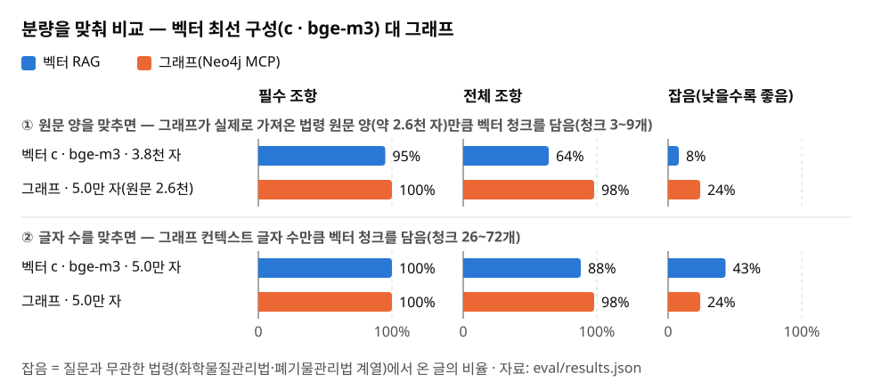

같은 법령 9종과 골든 퀘스천 5개로 일반적인 벡터 RAG를 만들고, 정답 조항을 얼마나 가져오는지(재현율)를 그래프와 같은 채점기로 측정합니다. 답이 한 조문에 모인 질문은 벡터도 모두 찾았고, 차이는 벌칙처럼 여러 조문을 따라가야 하는 질문과 위임·과태료 같은 보충 조항에서 나타났습니다.
무엇을 · 왜#
9장에서 그래프는 골든 퀘스천 5개에 모두 정확하게 답했습니다. 그래프 없이 흔히 쓰는 벡터 RAG(문서를 잘라 임베딩하고, 질문과 비슷한 조각을 찾아 LLM에 넘기는 방식)로는 어디까지 가능할까요? 같은 법령 PDF 9종, 같은 질문 5개, 같은 채점기로 측정합니다.
재현율은 정답 조항 가운데 LLM 컨텍스트에 실제로 들어온 비율입니다. 검색으로 가져오지 못한 조항은 답을 생성하는 모델의 성능이 아무리 좋아도 활용할 수 없습니다. 그래서 답과 별개로 검색 성능을 평가합니다.
정답표(eval/gold.json)는 법령 원문만 읽고 만들었고, 그래프의 결과는 보지 않았습니다. 조항 39개(필수 15개) 각각에 원문 구절(span)을 1~2개 붙였습니다. 각 span이 원문에 정확히 한 번 나오는지, 명시한 조문 안에 있는지는 verify_gold.py로 확인했습니다(오류 0).
| 용어 | 이 실험에서의 뜻 |
|---|---|
| 필수 조항 | 없으면 답할 수 없는 조항. 예: Q1의 법 제6조제2항(1일 전까지 시ㆍ도지사에게 신고) |
| 보충 조항 | 있으면 답이 완전해지는 조항. 시행령·시행규칙의 절차·서식, 권한 위임, 관련 벌칙·과태료 |
| 찾음 판정 | 컨텍스트와 span에서 모두 공백·기호를 지우고 NFKC로 정규화한 뒤, span 하나라도 들어 있으면 찾음 |
| 답 정확도 | 질문마다 만든 사실 체크리스트(필수 사실 18개, 전체 32개) 중 답이 충족한 비율. 판정은 claude -p --model opus가 하고, 시스템 이름과 컨텍스트는 보여 주지 않음 |
| 잡음 | 컨텍스트 중 질문과 무관한 법령 계열(화학물질관리법·폐기물관리법)에서 온 글의 비율 |
Q5(벌칙·과태료)에서는 벌칙 조의 본문(형량)도 필수로 넣었습니다. 호의 내용에는 조 번호도 형량도 없기 때문입니다. 질문별 판단 근거는 eval/gold-notes.md에 있습니다.
따라 하기#
-
준비. 교재 자료의
eval/폴더에서 가상 환경을 만듭니다. 벡터 DB는 내장형 Chroma(.chroma/에 저장)라 Docker가 필요 없습니다. 답 생성과 판정에는claudeCLI를 씁니다.cd course-graphrag-law/eval uv venv --python 3.12 .venv uv pip install --python .venv/bin/python pymupdf chromadb openai python-dotenv rank_bm25 kiwipiepy \ langchain-text-splitters sentence-transformers -
원문 추출과 정답표 검증. PDF 9종에서 머리말·쪽 번호를 지운 원문(
corpus/*.txt)을 추출하고, 정답표의 span을 원문과 대조합니다..venv/bin/python extract.py .venv/bin/python verify_gold.py -
벡터 RAG 만들기. 교재의
vector_rag.py(145줄)는 세 가지 구성을 담고 있습니다.구성 분할 청크 수 검색 a LangChain 기본값 그대로 800자 재귀 분할(겹침 100자). 메타데이터는 PDF 파일 이름뿐 631 코사인 top-k b 조문 하나 = 청크 하나. 앞에 「법령명 제N조(제목)」를 붙임 707 코사인 top-k c b와 같은 청크 707 벡터 상위 50 + BM25(kiwipiepy 형태소) 상위 50을 RRF로 합침 임베딩은 OpenAI
text-embedding-3-small과 로컬BAAI/bge-m3두 가지입니다. 직접 만들어 보려면 Claude Code에 다음과 같이 요청합니다. 아래는 예시입니다.vector_rag.py를 만든 프롬프트 기록이 남아 있지 않아, 교재 코드의 구성을 요청 문장으로 옮겼습니다.eval/corpus/*.txt 의 법령 원문 9개로 벡터 RAG 기준선을 만들어 줘. - 분할 두 가지: 800자 재귀 분할(겹침 100자), 조문 하나 = 청크 하나 - 임베딩: OpenAI text-embedding-3-small 과 로컬 BAAI/bge-m3 - 저장·검색: 내장형 Chroma, 코사인 top-k, 조문 단위에는 BM25 혼합(RRF) 옵션 - 답: 찾은 청크만 [자료 n] 으로 붙여 claude -p 에 넘기고, 자료에 없으면 '자료에서 찾을 수 없음'이라고 쓰게 - API 키 값은 출력하지 마.교재 코드의 핵심만 옮기면 다음과 같습니다(
…는 생략한 부분입니다).# 1. 청크 나누기 sp = RecursiveCharacterTextSplitter(chunk_size=800, chunk_overlap=100) # 구성 a head = f"{law} {a['id']}({a['title']})\n" # 구성 b·c # 3. 검색 — 구성 c: 벡터 순위와 BM25 순위를 RRF 로 합친다 for hits in (vector_search(question, "article", model, pool), bm25_search(question, pool)): for rank, h in enumerate(hits): fused[h["id"]] = fused.get(h["id"], 0) + 1 / (rrf_k + rank + 1) # 4. 답 생성 — 도구 없는 claude -p 에 [자료 n] + 청크 본문만 넘긴다 SYSTEM_PROMPT = ("당신은 법령 질의응답 도우미입니다. 사용자가 준 [자료]에 있는 내용만 근거로 " "한국어로 답하세요. 근거 조항(법령명·조·항·호)을 밝히고, 자료에 없는 내용은 " "추측하지 말고 '자료에서 찾을 수 없음'이라고 쓰세요.") … -
색인 생성과 실행. 분할 2종 × 임베딩 2종으로 색인 4개를 만들고, 구성 a·b·c × 임베딩 2종 × k=3·5·10으로 검색합니다. 대표값은 k=5이고, k=5에서는 답을 3번씩(
claude -p --model sonnet) 만듭니다..venv/bin/python vector_rag.py index --split char --embed openai .venv/bin/python vector_rag.py index --split article --embed openai HF_HUB_OFFLINE=1 .venv/bin/python vector_rag.py index --split char --embed bge HF_HUB_OFFLINE=1 .venv/bin/python vector_rag.py index --split article --embed bge HF_HUB_OFFLINE=1 .venv/bin/python run_vector.py # runs/vector-*/ , diag/vector-*.json질문 하나만 실행해 볼 때는
ask를 씁니다(--hybrid를 붙이면 구성 c)..venv/bin/python vector_rag.py ask --split article --embed openai --k 5 "정기점검을 마친 제조소등의 관계인은 …" -
채점. 채점기
score.py는 시스템 종류와 상관없이q<N>[-r<M>].json파일만 읽습니다. 파일 안에{"qid": 1, "retrieved_text": "…LLM 컨텍스트 전체…", "answer": "…"}만 있으면 되므로, 9장의 그래프 헤드리스 기록도 같은 기준으로 채점됩니다..venv/bin/python score.py --all # 벡터 + 그래프 → results.json, results.md .venv/bin/python score.py --runs ../lab/law-graph/runs/graph --name graph # 그래프만
결과 ①: 벡터가 잘한 질문#
k=5(컨텍스트 약 4천 자)에서의 질문별 재현율입니다. 각 칸은 필수 / 전체를 나타냅니다.
| 구성 | Q1 | Q2 | Q3 | Q4 | Q5 | 평균 |
|---|---|---|---|---|---|---|
| a · OpenAI | 100 / 40 | 100 / 83 | 0 / 33 | 100 / 67 | 50 / 31 | 70 / 51 |
| a · bge-m3 | 100 / 40 | 100 / 67 | 100 / 50 | 100 / 83 | 0 / 19 | 80 / 52 |
| b · OpenAI | 100 / 60 | 100 / 83 | 100 / 67 | 100 / 83 | 0 / 0 | 80 / 59 |
| b · bge-m3 | 100 / 60 | 100 / 83 | 100 / 50 | 100 / 67 | 25 / 31 | 85 / 58 |
| c · OpenAI | 100 / 60 | 100 / 83 | 100 / 67 | 100 / 67 | 50 / 38 | 90 / 63 |
| c · bge-m3 | 100 / 60 | 100 / 83 | 100 / 67 | 100 / 83 | 75 / 44 | 95 / 67 |

Q1·Q2·Q4는 여섯 구성 모두 필수 100%입니다. 답이 한 조문에 모여 있고(제6조제2항, 제15조제2항·제3항, 제27조제1항~제3항), 질문의 단어가 조문의 단어와 거의 같습니다. 제15조는 30일 재선임과 14일 신고가 함께 있어 800자 분할로도 한 청크에 함께 들어왔고, 제27조는 a · OpenAI(4위)를 빼면 모두 1위였습니다.
또 하나 눈여겨볼 점은 답 정확도(필수 사실)가 모든 칸에서 재현율(필수)과 같았다는 것입니다. 답을 생성하는 모델은 자료에 있으면 맞히고, 없으면 「자료에서 찾을 수 없음」이라고 썼습니다. 차이를 만드는 것은 검색입니다.
결과 ②: 벡터가 놓친 것과 이유#
Q3: 800자 분할 + OpenAI 조합에서만 놓침#
구성 a의 정답 청크 위험물안전관리법#16에는 세 조문이 섞여 있습니다.
④ 소방청장은 … 예방규정의 이행 실태를 정기적으로 평가할 수 있다. ← 제17조 끝
제18조(정기점검 및 정기검사) ① … ② 제1항에 따라 정기점검을 한 제조소등의 관계인은
점검을 한 날부터 30일 이내에 점검결과를 시ㆍ도지사에게 제출하여야 한다. …
제19조(자체소방대) 다량의 위험물을 저장ㆍ취급하는 제조소등으로서 … ← 제19조
서로 다른 의미가 섞여 임베딩이 불명확해지면서 OpenAI에서는 83위(점수 0.384)였습니다. 1위 시행규칙 제68조(기록·유지)가 0.671, 50위가 0.405였습니다. 같은 OpenAI라도 조문 단위(b)면 1위, 800자 분할이라도 bge-m3면 2위였으니 어느 한쪽만의 문제가 아니라 조합의 문제입니다. 이 구성에서 세 번 생성한 답은 모두 「자료에서 찾을 수 없음」이었고, 「관계인의 의무: 기록·보존 (제출 아님)」이라고 단정해 판정자가 모순 진술로 기록했습니다.
Q5: 벌칙 조문은 의무를 번호로만 가리킴#
벌칙 조문은 의무의 내용을 다시 적지 않고 번호로 가리킵니다.
제36조(벌칙) 다음 각 호의 어느 하나에 해당하는 자는 1천500만원 이하의 벌금에 처한다.
…
6. 제15조제1항 또는 제2항의 규정을 위반하여 안전관리자를 선임하지 아니한 관계인으로서 …
그래서 질문(「선임 의무나 정기점검 의무를 지키지 않으면…」)과 의미가 더 가까운 것은 의무를 정한 실체 조문입니다. b · OpenAI의 상위 5개는 시행규칙 제53조(0.595), 시행규칙 제67조, 법 제15조, 시행규칙 제54조, 시행령 제13조였습니다. 제39조는 12위(0.539), 제35조는 30위(0.518), 제36조는 33위(0.516)였습니다. 1위와의 점수 차는 0.08뿐인데 그 사이에 실체 조문 수십 개가 있습니다. 필수 조항이 처음 나온 순위는 다음과 같습니다.
| 필수 조항 | a · OpenAI | b · OpenAI | c · OpenAI | a · bge-m3 | b · bge-m3 | c · bge-m3 |
|---|---|---|---|---|---|---|
| 제36조 6호·본문(미선임) | 38 | 33 | 13 | 17 | 6 | 10 |
| 제35조 4호·본문(정기점검) | 27 | 30 | 10 | 6 | 2 | 1 |
| 제39조① 5·7·7의2호·본문(과태료) | 1 | 12 | 2 | 25 | 14 | 5 |
BM25를 섞으면(c) 벌칙의 순위가 크게 올라가지만, 가장 좋은 c · bge-m3도 k=5에서는 제36조(10위)가 빠졌습니다. 필수 100%는 k=10에서야 달성했습니다.
가장 위험한 점: 「자료에 없다」가 「법에 없다」로 읽힌다
제36조가 빠진 답은 다음과 같습니다. 「제15조의 선임 의무 위반에 대한 벌칙·과태료 조항은 자료에서 찾을 수 없음」(c · bge-m3, k=5), 「형사처벌(징역·벌금) 조항은 자료에 없습니다」(c · OpenAI, k=5), 「자료에는 안전관리자 미선임 자체에 대한 벌칙(제35조 등)이나 과태료 조항이 나와 있지 않습니다」(c · OpenAI, k=10). 답 문장은 실행할 때마다 달라질 수 있지만 같은 양상이 반복됐습니다. 모델은 지시대로 정직하게 썼어도, 읽는 사람에게는 미선임 벌칙(1천500만원 이하 벌금)이 없다는 말로 들립니다. 매뉴얼 작성자가 가장 피해야 할 실패입니다.
보충 조항은 거의 검색되지 않음#
시행령 제21조(시ㆍ도지사 권한 12개를 소방서장에게 넘기는 위임 목록), 과태료 호(제39조제1항 3·5·7의2호), 양벌규정(제38조제2항)은 k=5의 여섯 구성 어디에서도 거의 검색되지 않았습니다. 질문과 의미가 멀고 본 조문과는 번호로만 연결되기 때문입니다. 그래서 전체 재현율이 67%를 넘지 못합니다.
개선하면 어디까지 가능할까요?#
| 구성 | k=3 | k=5 | k=10 |
|---|---|---|---|
| a · OpenAI | 50 / 34 | 70 / 51 | 70 / 54 |
| b · OpenAI | 60 / 47 | 80 / 59 | 80 / 61 |
| c · OpenAI | 90 / 60 | 90 / 63 | 95 / 70 |
| a · bge-m3 | 80 / 50 | 80 / 52 | 85 / 59 |
| b · bge-m3 | 85 / 58 | 85 / 58 | 90 / 69 |
| c · bge-m3 | 85 / 56 | 95 / 67 | 100 / 74 |
- 조문 단위로 자르면 Q3 실패가 사라집니다. 800자 분할에서는 Q1 정답 청크가 「② 제조소등의 위치ㆍ구조…」로 시작해 조 번호가 앞 청크에 남았고, a · bge-m3 답에 「'제6조'라고 직접 표시되어 있지는 않으나 … 제6조제2항으로 판단」이 붙었습니다. 조문 단위 청크는 조 번호로 시작합니다.
- BM25를 섞으면 Q5에서 벌칙의 순위가 올라갑니다(c · bge-m3에서 제35조 1위).
- k를 늘리면 필수 조항은 모두 검색되지만 컨텍스트가 두 배가 되고, 위임·과태료·양벌 같은 보충 조항은 여전히 잘 검색되지 않습니다(k=10 최선 전체 74%).
결과 ③: 그래프와 나란히#
그래프(9장의 헤드리스 15회)는 필수 100%, 전체 98%였습니다. 답은 15번 모두 필수 사실을 충족했습니다(전체 사실 93%). 비교 결과를 한 표에 모으면 다음과 같습니다.
| 시스템 | 재현율 필수 / 전체 | 컨텍스트 글자 수 | 잡음 | 정답 조문 비율 | 답 정확도 필수 / 전체 |
|---|---|---|---|---|---|
| 벡터 기본(a · OpenAI, k=5) | 70 / 51 | 4,139 | 4% | 22% | 70 / 54 |
| 벡터 최선(c · bge-m3, k=5) | 95 / 67 | 4,036 | 6% | 42% | 95 / 72 |
| 벡터 최선, 원문 양을 그래프와 맞춤 | 95 / 64 | 3,799 | 8% | 41% | 검색만 |
| 벡터 최선, 글자 수를 그래프와 맞춤 | 100 / 88 | 49,543 | 43% | 6% | 검색만 |
| 그래프(Neo4j MCP) | 100 / 98 | 50,003 | 24% | 37% | 100 / 93 |
정답 조문 비율은 컨텍스트 가운데 정답 조항이 포함된 조문에서 온 글의 비율입니다. 값은 모두 eval/results.json의 질문 평균입니다.
공정하게 보기#
그래프 컨텍스트는 12배, 그러나 원문은 비슷#
그래프 컨텍스트는 평균 50,003자로 벡터 k=5의 12배입니다. 살펴보면 get-schema 결과가 18%, 법령 목록 질의(MATCH (l:Law) RETURN …) 결과가 26%, 줄바꿈·들여쓰기 공백이 22%이고, 나머지도 JSON 키와 메타데이터, 같은 조문을 세 번 담은 속성(fullText·normText·text)이 대부분입니다. 컨텍스트에 실제로 포함된 법령 원문(정규화 기준 고유 글자 수)은 그래프 평균 2.6천 자로, 벡터 k=5의 2.4~2.6천 자와 같습니다. 그래서 두 가지 기준으로 다시 측정했습니다.

- 원문 양을 맞추면(c · bge-m3 청크 3~9개): 벡터 최선 95 / 64, 그래프 100 / 98.
- 글자 수를 맞추면(벡터 청크 21~92개, 약 5만 자): 여섯 구성 중 다섯 구성이 필수 100%를 따라잡습니다(예외인 a · OpenAI는 Q3 청크가 83위라 80%). 전체는 73~90%, 잡음은 35~55%(c · bge-m3는 43%)이고, 정답 조문 비율은 6%로 떨어집니다. 이 분량에서도 과태료 호(75~557위), 위임 시행령 제21조(47~418위), 양벌 제38조제2항(76~139위)은 들어오지 않았습니다.
- k=100(8.3만~9.5만 자)까지 늘리면 c · bge-m3가 100 / 96, a · OpenAI가 100 / 100이 됩니다.
정리하면 벡터는 분량을 늘려 재현율을 높이지만 그만큼 잡음도 늘어납니다. 그래프는 비슷한 원문 양으로 더 정확히 가져오는 대신 부가 정보(스키마·메타데이터·JSON)의 양이 많습니다. 잡음은 법령 원문으로 확인되는 부분만 분모에 포함하므로, 그래프의 부가 정보는 잡음에 들어가지 않습니다.
답 생성 조건이 다름#
벡터는 claude -p --model sonnet이 도구 없이 검색된 청크만 보고 한 번에 답했습니다. 그래프는 Claude Code 기본 모델(기록상 claude-fable-5-2)이 MCP로 3~11번 직접 질의했습니다. 그래서 그래프 수치에는 그래프 구조와 모델이 작성한 질의가 함께 반영되어 있습니다. 판정은 양쪽 모두 opus이고, 판정자는 시스템 이름을 모릅니다.
그래프의 약점#
- Cypher 실패: 86번 중 12번(14%), 15회 중 10회에서 발생했습니다. 8번은 목록 속성에
toString()을 사용해 발생한 TypeError, 4번은WITH·집계 문법 오류였고, 모두 다음 호출에서 수정해 다시 실행했습니다. - 분량이 실행마다 2~3배 달라짐: Q4는 22.8천~60.5천 자였습니다. 15번 중 7번은 법령 목록 전체(2만~3.5만 자)를 가져왔습니다. 재현율은 세 번 모두 같았습니다.
- Q4 잡음 45%: 「유출」「응급조치」로 노드 전체를 찾다가 화학물질관리법 본문이 섞였습니다(실행별 9~76%).
그래프가 Q5에서 제12조를 놓친 이유#
Q5 전체 재현율 88%에서 빠진 것은 제12조 4호·6호(허가취소·사용정지)입니다. 모델은 PENALIZES 관계만 따라가며 벌칙을 찾았습니다. 아래는 q5-r1의 실제 질의이고, 모델이 작성하는 Cypher는 실행할 때마다 달라질 수 있습니다.
MATCH (s)-[r:PENALIZES]->(t) WHERE t.articleNo IN [15,18]
RETURN labels(s) AS sl, s.pid, s.citation, s.text, r.raw, labels(t) AS tl, t.pid, t.citation, t.articleSub ORDER BY s.pid
관계가 없어서 못 찾은 것은 아닙니다. 읽기 질의로 확인하면 제12조의 호에서 제15조·제18조로 가는 REFERS_TO가 있습니다.
MATCH (s {lawId:'위험물안전관리법'})-[r]->(t)
WHERE s.articleNo = 12 AND s.citation IS NOT NULL AND t.articleNo IN [15,18]
RETURN s.citation, type(r), r.kind, t.citation;
s.citation, type(r), r.kind, t.citation
"위험물안전관리법 제12조제4호", "REFERS_TO", "인용", "위험물안전관리법 제15조제1항"
"위험물안전관리법 제12조제4호", "REFERS_TO", "인용", "위험물안전관리법 제15조제2항"
"위험물안전관리법 제12조제6호", "REFERS_TO", "인용", "위험물안전관리법 제18조제1항"
…
스키마가 행정처분을 제재(Sanction)로 모델링하지 않았기 때문에, 「벌칙·과태료」를 물으면 모델은 PENALIZES만 봅니다. 질문이 벌칙·과태료였으니 설명 가능한 누락이고 정답표에서도 보충 조항으로 분류되지만, 스키마 설계가 질문으로 탐색할 수 있는 범위를 정한다는 점을 보여 줍니다(5장).
이 실험의 한계#
질문 5개, 법령 3벌(위험물안전관리법·화학물질관리법·폐기물관리법의 법·시행령·시행규칙)로 수행한 소규모 실험입니다. 정답표도 한 벌이고, OpenAI 임베딩 순위는 다시 실행하면 한 순위 정도 달라질 수 있습니다. 수치보다는 어떤 유형의 질문에서 차이가 나는지에 주목하세요.
그래서 언제 무엇을#
| 질문 유형 | 이 실험의 예 | 알맞은 방법 |
|---|---|---|
| 답이 한 조문에 모이고 질문의 단어가 조문의 단어와 같음 | Q1·Q2·Q4 | 벡터 RAG로 충분합니다. 조문 단위로 자르고 BM25를 섞으면 더 안정적입니다 |
| 조 번호로 이어진 여러 조문을 따라가야 함 | Q5 벌칙·과태료 | 그래프. 관계를 따라가면 유사도 순위와 상관없이 해당 조문에 도달합니다. 단, 어느 관계를 따라갈지는 스키마와 모델의 질의에 달려 있습니다 |
| 위임·과태료·양벌까지 빠짐없이 모아야 함 | 매뉴얼의 「관련 조항 전부」 | 그래프. 벡터는 5만 자를 담아도 들어오지 않았습니다 |
| 질문의 단어가 어느 노드에 해당하는지 모름 | 엔티티 연결의 시작점 | 둘을 섞기: Neo4j의 벡터 색인·전문 색인으로 시작 노드를 찾고 관계를 따라갑니다(2장) |
이번 실행에서 모델은 전문 색인이나 벡터 색인을 쓰지 않고 CONTAINS로 찾았고, 혼합 구성은 측정하지 않았습니다. 혼합 구성을 시험한다면 결과를 q<N>.json 형식으로 남겨 같은 채점기(score.py --runs)로 비교할 수 있습니다.
막히면
- OpenAI 임베딩 구성이 실행되지 않을 때 →
vector_rag.py는.env의OPENAI_API_KEY를 읽습니다(코드에서는eval/의 두 단계 위 폴더). 키 값은 출력하지 않게 되어 있습니다. 키가 없으면 bge-m3 색인 두 개만으로도 구성 a·b·c를 비교할 수 있습니다. - bge-m3 첫 실행이 오래 걸릴 때 → 처음 실행할 때 허깅페이스에서 모델을 받습니다(약 2.3GB). 디스크 여유를 확인하고, 한 번 받은 뒤에는 명령 앞에
HF_HUB_OFFLINE=1을 붙여 다시 받지 않게 합니다. - 순위가 이 장과 한두 자리 다를 때 → OpenAI 임베딩은 다시 실행하면 순위가 ±1 달라질 수 있습니다. 비교할 때는
diag/vector-*.json의 상위 50위와 점수를 함께 확인합니다. - 판정을 다시 받고 싶을 때 →
score.py는 같은 답의 판정을judgments/<이름>/에 저장해 재사용합니다. 새로 판정하려면 그 폴더를 지우고 실행합니다.
확인 문제#
Q1·Q2·Q4에서는 벡터 RAG도 필수 조항을 모두 찾았습니다. 왜인가요?
답이 한 조문(제6조제2항, 제15조제2항·제3항, 제27조제1항~제3항)에 모여 있고, 질문의 단어가 조문의 단어와 거의 같기 때문입니다. 의미가 가까운 조각을 찾는 벡터 검색이 가장 잘 처리하는 유형입니다. 이런 질문에서는 그래프가 앞설 여지가 작습니다.
벡터 RAG가 Q5에서 제36조를 놓쳤을 때 답이 왜 위험한가요?
벌칙 조문은 「제15조제1항 또는 제2항의 규정을 위반하여」처럼 의무를 번호로만 가리켜, 질문과 의미가 가까운 실체 조문에 밀립니다. 제36조가 빠지자 답은 「선임 의무 위반에 대한 벌칙·과태료 조항은 자료에서 찾을 수 없음」이라고 썼습니다. 「자료에 없다」가 「법에 없다」로 읽혀, 1천500만원 이하 벌금이 있는데도 없는 것처럼 전달됩니다.
그래프 컨텍스트가 벡터의 12배인데, 이 비교는 공정한가요?
글자 수는 12배지만 대부분 스키마(18%)·법령 목록(26%)·공백(22%)·JSON 부가 정보이고, 실제 법령 원문은 약 2.6천 자로 벡터 k=5와 같습니다. 원문 양을 맞추면 벡터 최선 95 / 64 대 그래프 100 / 98, 글자 수를 맞추면 벡터 100 / 88(잡음 43%) 대 그래프 100 / 98(잡음 24%)입니다. 다만 답 생성 조건(한 번에 답하는 sonnet 대 MCP로 여러 번 질의하는 모델)이 달라서, 그래프 수치에는 모델이 작성한 질의도 함께 반영되어 있습니다.